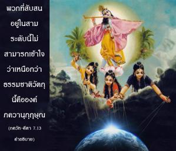
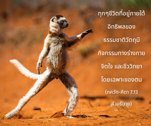
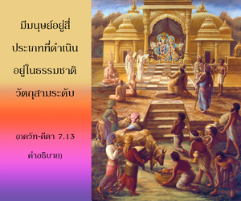
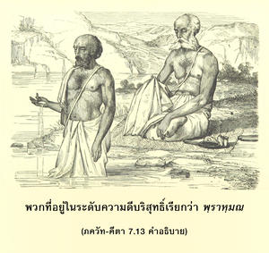

ลุ่มหลงอยู่ในสามระดับ (ความดี ตัณหา และอวิชชา) โลกทั้งโลกไม่รู้จักข้า ผู้ซึ่งอยู่เหนือสามระดับและไม่มีวันสิ้นสุด




ทั่วทั้งโลกหลงอยู่ในเสน่ห์ของสามระดับแห่งธรรมชาติวัตถุ พวกที่สับสนอยู่ในสามระดับนี้ไม่สามารถเข้าใจว่าเหนือกว่าธรรมชาติวัตถุนี้คือองค์ภควานฺกฺฤษฺณ
ทุกๆชีวิตที่อยู่ภายใต้อิทธิพลของธรรมชาติวัตถุมีกิจกรรมทางร่างกาย จิตใจ และชีววิทยาโดยเฉพาะของตน มีมนุษย์อยู่สี่ประเภทที่ดำเนินอยู่ในธรรมชาติวัตถุสามระดับ พวกที่อยู่ในระดับความดีบริสุทธิ์เรียกว่า พฺราหฺมณ พวกที่อยู่ในระดับตัณหาบริสุทธิ์เรียกว่า กฺษตฺริย พวกที่อยู่ทั้งในตัณหาและอวิชชาเรียกว่า ไวศฺย พวกที่อยู่ในอวิชชาล้วนๆเรียกว่า ศูทฺร และพวกที่ต่ำกว่านี้คือสัตว์เดรัจฉาน อย่างไรก็ดีชื่อระบุเหล่านี้ไม่ถาวรเราอาจเป็น พฺราหฺมณ กฺษตฺริย ไวศฺย หรืออะไรก็ได้ไม่ว่าในกรณีใดชีวิตนี้ไม่ถาวร แต่ถึงแม้ว่าชีวิตไม่ถาวรและเราไม่รู้ว่าจะไปเป็นอะไรในชาติหน้า ด้วยมนต์สะกดของพลังแห่งความหลงนี้ทำให้เราพิจารณาตัวเราตามแนวคิดแห่งชีวิตทางร่างกาย ดังนั้นจึงคิดว่าเราเป็นคนอเมริกัน คนอินเดีย คนรัสเซีย หรือเป็น พฺราหฺมณ เป็นชาวฮินดูเป็นชาวมุสลิม ฯลฯ และถ้าหากว่าถูกพันธนาการอยู่ในสามระดับของธรรมชาติวัตถุเราก็ลืมบุคลิกภาพสูงสุดแห่งพระเจ้าผู้ทรงอยู่เบื้องหลังระดับต่างๆเหล่านี้ ฉะนั้นองค์ศฺรี กฺฤษฺณตรัสว่าสิ่งมีชีวิตที่หลงอยู่ในสามระดับแห่งธรรมชาติจะไม่เข้าใจว่าเบื้องหลังฉากวัตถุคือบุคลิกภาพสูงสุดแห่งพระเจ้า
มีสิ่งมีชีวิตต่างๆมากมาย เช่น มนุษย์ เทวดา สัตว์เดรัจฉาน ฯลฯ แต่ละชีวิตอยู่ภายใต้อิทธิพลของธรรมชาติวัตถุ และทั้งหมดได้ลืมบุคลิกภาพแห่งพระเจ้าผู้ทรงเป็นทิพย์ พวกที่อยู่ระดับตัณหาและอวิชชาและแม้แต่พวกที่อยู่ในระดับความดีจะไม่สามารถไปสูงกว่าแนวความคิดแห่งสัจธรรม พฺรหฺมนฺ ที่ไร้รูปลักษณ์ พวกเขาสับสนเมื่อทราบว่าองค์ภควานฺในบุคลิกลักษณะส่วนพระองค์ประกอบไปด้วยความสง่างาม ความมั่งคั่ง ความรู้ พลังอำนาจ ชื่อเสียง และความเสียสละทั้งหมด ในเมื่อแม้แต่พวกที่อยู่ในความดียังไม่สามารถเข้าใจพระองค์ แล้วพวกที่อยู่ในตัณหาและอวิชชาจะมีความหวังอะไร กฺฤษฺณจิตสำนึกเป็นทิพย์เหนือสามระดับแห่งธรรมชาติวัตถุเหล่านี้ พวกที่สถิตย์อย่างแท้จริงในกฺฤษฺณจิตสำนึกเป็นผู้หลุดพ้นแล้วอย่างแท้จริง